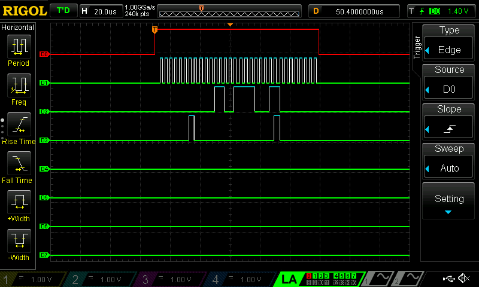
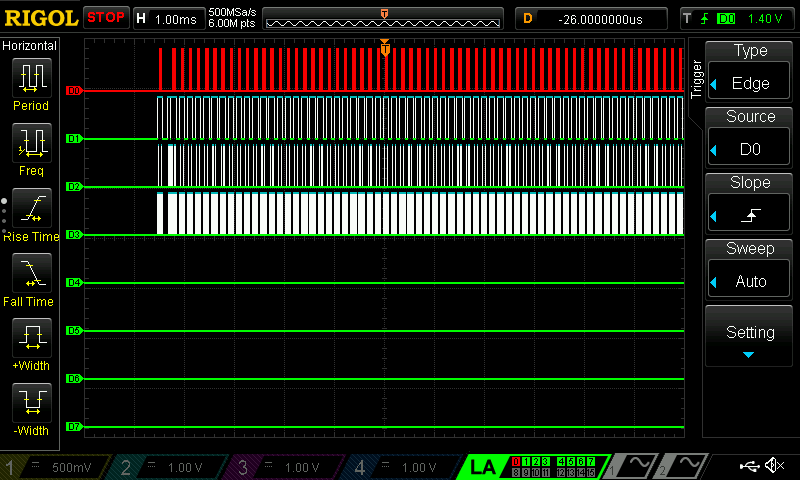
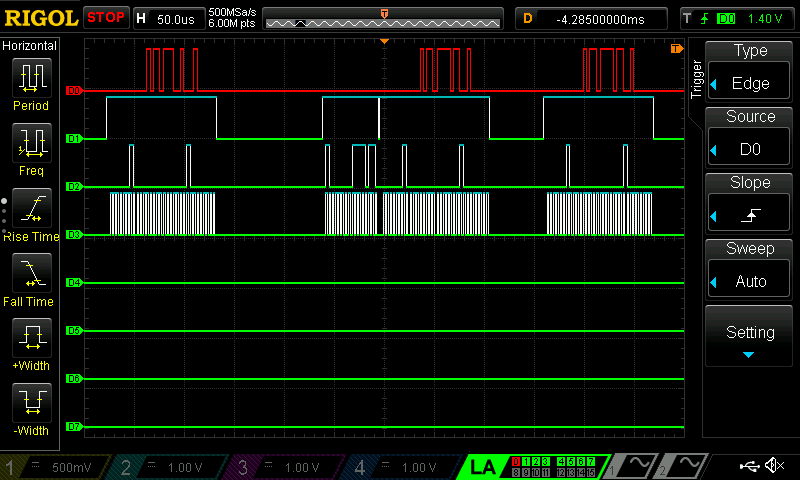

Lab 6 Writeup
Lab 6: The Internet of Things and Serial Peripheral Interface (SPI)
Hours Spent: 49.5, Mapped with Toggl Track ### Introduction
The goal of this laboratory is to introduce us to the Internet of Things, and begin using serial peripheral interconnects using a DS1722 digital temperature sensors (which communicates via SPI) and a ESP8266 board (which sets up a WIFI network through which users can program HTML files).
The final system creates a webpages where the current temperature is displayed and is updated when the page is refreshed. The system must additionally display the state of an on-board LED on the STM32L432KCU microcontroller.
Design
The main goal of this project was focused on configuring the registers of the STM32L432KCU board. The design uses CMSIS library device templates, but writes its own SPI library, which is configurable. This class is later used by the DS1722 class to talk to the DS1722 chip, which takes digital temperature measurements of the surrounding area. This device can be configured to be adjusted using 8, 9, 10, 11, or 12 bits.
All of these states can then be configured from within an http webserver, which is set up via an ESP8266 chip (Lab6ESP_19).
The webpage displays:
The current temperature is displayed using ºC.
The state of an LED that is set on the board.
The DS1722 chip is communicated with after being sent a SPI input with one of four instructions:
0x00, 0x01, 0x02 -> Reading the configuration, the lower configuration of bits, the higher configuration of bits
0x80 -> Write to the configuration bits
The “configuration” of the chip is of particular interest, because this is how control over the number of bits being sent into the device is determiend; although the chip’s SPI will always put out 16 bits, the actual data of these bits differs depending on the configuration. As seen in Table 1, the layout of the bits scales by powers of two; an 8 bit resolution will resultantly be able to determine the temperature with 1ºC of resolution, and 12 bit resolution will be determined with 0.0625ºC of resolution.
| Number Bits | Bit 0 | Bit 1 | Bit 2 | Bit 3 | Bit 4 | Bit 5 | Bit 6 | Bit 7 | Bit 8 | Bit 9 | Bit 10 | Bit 11 | Bit 12 | Bit 13 | Bit 14 | Bit 15 |
|---|---|---|---|---|---|---|---|---|---|---|---|---|---|---|---|---|
| 8-bits | \(-2^{7}\) | \(2^{6}\) | \(2^{5}\) | \(2^{4}\) | \(2^{3}\) | \(2^{2}\) | \(2^{1}\) | \(2^{0}\) | 0 | 0 | 0 | 0 | 0 | 0 | 0 | 0 |
| 12-bits | \(-2^{7}\) | \(2^{6}\) | \(2^{5}\) | \(2^{4}\) | \(2^{3}\) | \(2^{2}\) | \(2^{1}\) | \(2^{0}\) | \(2^{-1}\) | \(2^{-2}\) | \(2^{-3}\) | \(2^{-4}\) | 0 | 0 | 0 | 0 |
The first 8 bits are found in the 0x02h (hexidecimal 02, binary 0000_0000_0000_0010) register, and the last are found in 0x01h register.
As a result, there are a total of 5 potential writing commands (configuring the chip to output 8, 9, 10, 11, or 12 bits), and three read commands (read the configuration, the lowest order eight bits, and the highest order eight bits)
Methods
For this lab, I wrote a total of four new files, and within these files several new methods.
SPI Module
The files for SPI are called STM32L432KC_SPI.c and STM32L432KC_SPI.h.
Within these files, there are two main functions; initSPI and spiSendReceive.
initSPI
This function takes in three inputs (integers br, cpol, and cpha), and configures the STM32L432KCU’s SPI function. In this case, there are two potential ways of controlling whether or not the SPI is transmitting (the Chip Enable [CE] /Chip Select [CS] line), which is either controlling the chip using the software, or by using a GPIO output separate from the SPI modules. In this case, I set the chip select to be hardware, as NSS is difficult to configure on top of the rest of the project.
The initSPI will do the following internally:
Enable all necessary GPIO pins (connect them to the RCC - Reset and Clock Control )
Enable the SPI within the RCC
Configure the GPIO’s Alternate Function #5 (which sets GPIO pins to be connected to SPI)
Set the baud rate (I set it to be 256th of the incoming frequency, in this case the PCLK is 16 MHz, so the final baud rate is \(\frac{16 MHz}{256}=62500 Hz\))
Set the polarity and the phase of the clock. The polarity defines where the clock is supposed to start - in the case that it’s - (as it is in this program), the clock starts at 0. The phase defines where data captures happen - so in this case, where I’ve assigned the phase to be 1, the clock will read the output of its SPI line on the second part of the clock - since the clock starts idle, the first change (0) would be where we’d write to the SPI, and the falling edge would be where the SPI would read. This will accurately communicate with the DS chip, which is configured to write on the second edge of the clock (in this way, the DS writes while we’re reading, and we write while the chip is reading). The DS wants the phase to be set to 1, and the chip actually automatically sets itself to read and write at the right edge of the clock.
Set the SS output to be enabled
Set FRXTH to generate a receiving event when the FIFO level is 8 bits (i.e. when the buffer has 8 bits, the program will send 8 bits, as opposed to sending 16 bits at once).
Turn everything else off - including a CRC polynomial calculation, the FRF (we want to use two lines for SPI), and the data-mode of the system (BIDI).
Finally, enable the SPI once everything has been configured.
spiSendReceive
SPI operates by shifting out old data and replacing it with new data in a FIFO (first-in first-out) stack. A good way of thinking about this is an eight-seat roller coaster; a bunch of people line up, and the first eight people that arrive get sent off all at once when the roller coaster leaves. When the roller coaster gets back (this is where things are slightly different), all eight people get off, and trail one after another out of the roller coaster, while the next eight people file in behind them Figure 1.
First, the function guarantees that the transmit is empty, then put the character you are sending (the variable send), and then waiting until the receive is empty before returning the character currently in the FIFO stack.
Of particular note is how pointers and volatile characters are used in this program. The character that is being set inside the SPI1’s DR should be volatile, since it should be possible for this character to change depending on the input value.
To make sure that this was a volatile character, we need to cast the character at the SPI1->DR into a volatile char. This is impossible unless we use a pointer to the specific address where the DR was placed in the microcontroller; if we cast the DR value directly to a character, we’d actually be casting the address for SDR into a volatile char, not the value inside of it. As a result, the final value needs to look like *((volatile char *) (&SPI1->DR)) = send;.
DS1722 Module
configSensor
Configures the DS1722 with the requisite number of bits. To do this, we first send the signal 1000_0000_0000_0000, or 0x80, to the DS1722 chip using the SPI. We then send an 8 bit signal following this, which details how to configure the device. This is detailed in Figure 2 of the DS1722 Datasheet
The main important string inside this configuration are the three bits at address 1, 2, and 3 that define the number of bits used for resolution within the DS1722. The bits are defined in Table 2.
| Resolution in Bits | Bits in Configuration [3:1] |
|---|---|
| 8 | 0b’000 |
| 9 | 0b’001 |
| 10 | 0b’010 |
| 11 | 0b’011 |
| 12 | 0b’1xx |
readTemp
There are two things that needs to happen to read the temperature coming out of the DS1722: first, we need all the bits stored in register 1 and 2, and second we need to combine the bits together to read the proper temperature.
The system sends two addresses, and after each address sent, sends 8 additional bits to get the address readout. One example of this signal can be seen in Figure 3. In this image, the output from the chip can be seen in D0 (the selected bar in red), the enabling chip is D1 (the second line), the third line is the address being sent to the DS1722 bit stream, and the fourth line is the clock sent from the SPI.
This specific transmittion, in addition, shows an example of the configuration code explained in configSensor.
readConfig
The module has one final “read” capability, which can be used to confirm the current bit-resolution of the device. This is done by sending the hex signal 0x00, to which the chip will put out a bit code resembling the write configuration code previously used in configSensor. Although not used in the final program, it would prove useful if the previous state of the sensor was not stored.
Sample SPI Transaction
Prior to running the entire program, I confirmed that the SPI on my board was working using a logic analyzer. Below is the output.

Each of the lines were attached in the following way:
D0: Chip Enable
D1: SPI Clock
D2: SPI MISO
D3: SPI MOSI
This configuration was used during initial set up to confirm that all terminals were plugged in correctly, and all signals were being received in the right order.
Hardware Setup
The schematic for this program (Figure 4) shows the connections between the DS1722, the ESP8266, and the MCU board. I’d like to draw some additional attention to the pulldown resistor at the MISO signal, which is necessary if you want to receive actual data, as the DS1722 chip will not automatically pull this signal to 0 while it is transmitting a signal (the system requires a pulldown resistor).
Initial Testing
The final configuration was tested for accuracy using a VNA logic analyzer that was run both without the USART control required for configuring the DSP reading, and with the USART control.
USART Testing
Testing while using the USART was first done when my USART finally able to connect, and my board was able to communicate via Wifi. I needed to see if the system was able to boot up properly, and more specifically if the configuration was working. I took a screen capture of the configuration and recalculation of the temperature (which used the average of 100 temperature readouts taken from the DS1722 chip). The image that covers a larger time span (left) shows this long stream of SPI transmissions. The image on the right depicts the very start of this string: first, the system takes a read out (which was used in the debugging process within a printf statement to confirm that the SPI was communicating). Next, the system writes a configuration to the system and taking its first readout; the Chip Enable (D1) turns on, and then off briefly before turning back on again to perform a temperature measurement; this is done by the SPI sending out 0x02 (see the D2 LNA line), sending 0x00 while it collects the DS1722’s output, and then sending 0x01 before waiting another 0x00.
The temperature read out is repeated 100 times, which is why the broader image on the left has so many repeated pulses; after the initial configuration stream, the system reruns the readTemp function 100 times to get the average temperature.


Results and Discussion
In the future, I’d like to get the SPI working with NSS, and I’d also like to program the system to incorporate the chip-enable pins within the SPI functions themselves rather than externally. At the moment, I configure the enabling pins within my main.c file, because the system appeared to break my USART functionality when I set it within the SPI program. In the future, I’d like to troubleshoot this issue and be able to run my program functions without worrying about enabling and disabling pins (which should be possible, but seemed to somehow be broken).
I think this Lab was exceptionally good for making sure that I understood the in’s and out’s of the Reference Manual. In meticulously setting up everything necessary for the SPI bus, I likely read Chapter 40 at least twenty times to make sure I understood every connection, enabler, and register that configures the SPI on the STM32L432KCU. Although I still needed pointers and some aid along the way, I can confidently say that a lot of this project was based on new skills I acquired through this course, and I learned a lot of resilience and persistance of mind that I didn’t have originally, which was one of my primary goals this semester.
Conclusion
In conclusion, I was successfully able to complete this lab with a working USART and SPI bus link, which communicates via an http link via a Wifi source and allows a user configuration capabilities and insight into a board that they may not be able to see.
As an additional little fun-thing, here’s a video of my system running on wifi - although you can’t see it, my board’s LED at PB3 is turning on and off with the LED button, and I am viewing the SPI interactions using an oscilloscope’s logic analyzer. Additionally, in order to help see the decimals better, I heat up the DS1722 at one point using my finger, and confirm that my (hand’s) temperature is about 2ºC hotter than the rest of the room, which helps to explain why I’m always cold while programming in the digital lab.